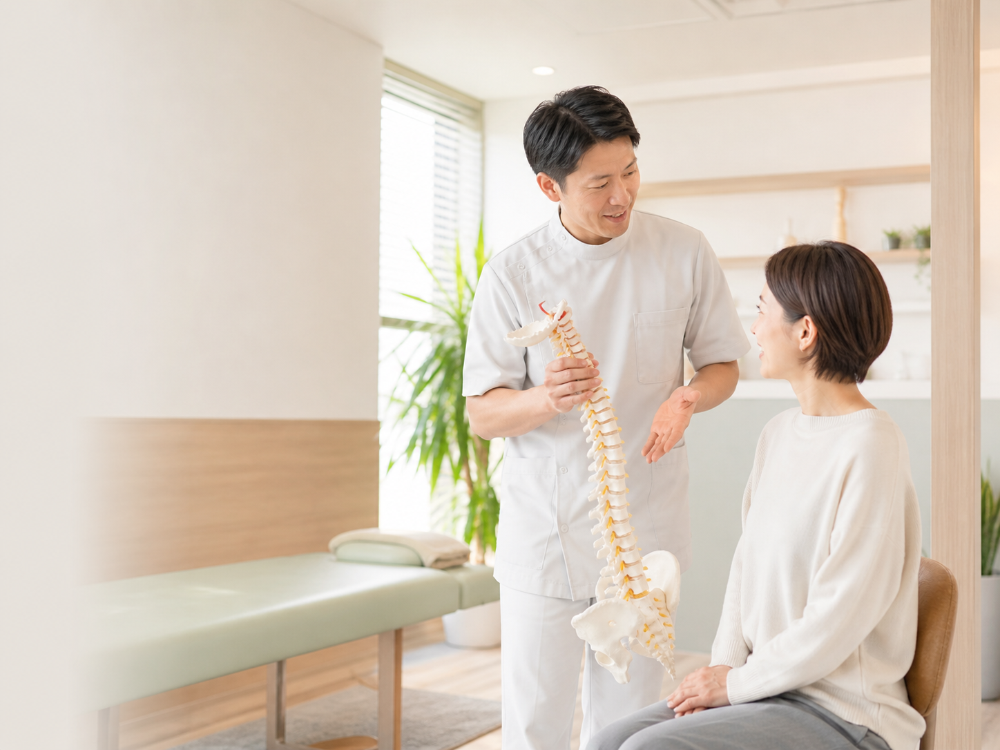
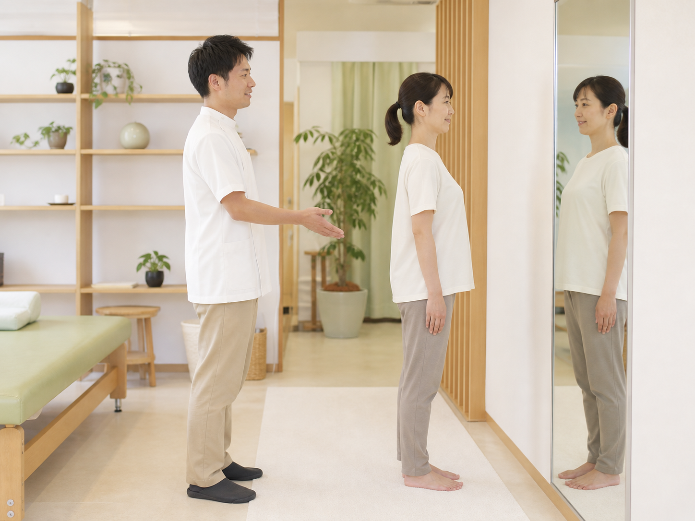
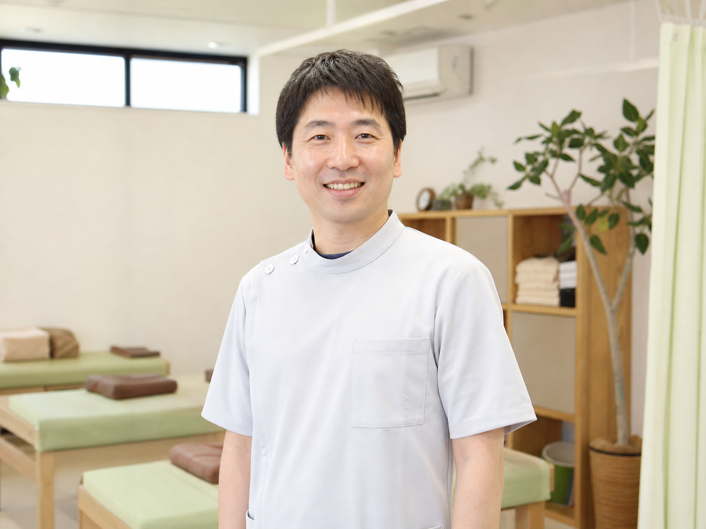

姿勢の癖
猫背や巻き肩などで、首・肩・腰に負担がかかりやすくなります。
姿勢・身体の使い方まで丁寧に確認し、くり返しにくい身体づくりを一緒に目指します。

お悩み
仕事や家事で忙しい毎日ほど、身体の小さな違和感は後回しになりがちです。
不調の感じ方や生活背景は、人によって違います。まずは今の身体の状態を一緒に確認しましょう。

くり返しやすい理由
気になる部分だけでなく、日常の姿勢や動作のクセが負担につながることがあります。
猫背や巻き肩などで、首・肩・腰に負担がかかりやすくなります。
座り方・立ち方・歩き方の小さな癖が影響することがあります。
長時間同じ姿勢や運動不足により、身体がこわばりやすくなります。
自分に合わないケアでは、負担が残りやすい場合があります。
コンセプト
今の身体を知ることが、くり返しにくい身体づくりの第一歩です。
姿勢や動き方を見ながら、負担がかかりやすいポイントを一緒に確認します。
お悩みや生活背景に合わせて、無理のない施術方針をご提案します。
自宅や職場で取り入れやすいケアをお伝えし、快適な生活をサポートします。
選ばれる理由
整体・接骨院が初めての方にも安心してご相談いただけるよう、説明のわかりやすさ、空間の清潔感、通いやすさを大切にしています。
明るく落ち着いた空間で、初めてでも過ごしやすい環境を整えています。
落ち着いて相談しやすい時間を確保し、身体の状態を丁寧に伺います。
初回時に施術内容と料金の目安を、分かりやすくお伝えします。
清潔感と丁寧な対応を大切にし、不安な点も相談しやすくしています。
施術内容
当院では、メニューを一方的に当てはめるのではなく、カウンセリングと身体チェックをもとに、一人ひとりの状態に合わせて施術方針をご提案します。
施術内容は、身体の状態やお悩みにより異なります。変化を保証するものではなく、状態に合わせた施術と生活面のサポートを行います。
初めての方へ
整体・接骨院に初めて行くときは、「痛くないかな」「料金は分かるかな」「通わされないかな」と不安に感じる方も少なくありません。
当院では、初めての方にも分かりやすく、安心して相談できる対応を大切にしています。
WEB・LINEから、ご都合に合わせてご予約ください。
服装や持ち物など、不安な点も受付時に確認できます。
お悩みや生活習慣、不安な点を丁寧に伺います。
姿勢や動き方を確認し、状態に合わせて進めます。
今の状態とセルフケアを分かりやすくお伝えします。
通い方は状態や目的に合わせて、納得いただいたうえでご案内します。
初回時に施術内容と料金の目安を分かりやすくお伝えします。
服装、持ち物、刺激の強さなど、不安な点は遠慮なくご相談ください。
流れ
施術した日だけで終わらせず、日常で取り入れやすいセルフケアや過ごし方もお伝えします。
施術後の身体の状態を、分かりやすく振り返ります。
自宅や職場で続けやすい簡単なケアをお伝えします。
必要に応じて、無理のない通い方の目安をご案内します。
今の身体を知ることが、くり返しにくい身体づくりの第一歩です。
料金
初めての方にも安心してご予約いただけるよう、初回に含まれる内容と料金をわかりやすくご案内します。
まずは、今の身体の状態を知ることから。
初めての方におすすめ
4,980円（税込）
初回体験プランに含まれる内容
6,600円（税込）
7,700円（税込）
料金は事前にご案内します。ご相談だけでも大丈夫です。
お客様の声
初めての方にも雰囲気が伝わるよう、ご相談いただいた方の声を一部ご紹介します。
初回に身体の状態を丁寧に説明してもらえたので、自分のクセに気づくきっかけになりました。強さも確認してくれて相談しやすかったです。
腰だけでなく座り方や身体の使い方も見てもらえました。説明が分かりやすく、普段の姿勢を見直すきっかけになりました。
産後の身体の変化や抱っこの負担を相談しました。話を丁寧に聞いてもらえて、無理のない範囲で進めてもらえました。
個人の感想であり、効果を保証するものではありません。

スタッフ紹介
院長 / 施術スタッフ
施術の内容や通い方の目安は、専門用語をできるだけ使わずにお伝えします。
実案件では、プロフィール内容は事実に合わせて調整します。
アクセス
地域の方が安心して通えるよう、清潔感のある空間と、初めてでも来院しやすい分かりやすい案内を整えています。
質問
初めての方からよくいただく質問をまとめました。気になることがあれば、ご予約前にもご相談いただけます。
はい。初回はカウンセリングと身体チェックを行い、内容を説明してから進めます。
内容により異なります。ご予約時または来院時に、分かりやすくご案内します。
動きやすい服装がおすすめです。硬い素材の服やスカートは避けると確認しやすくなります。
無理に強い施術は行いません。苦手な刺激や不安があれば遠慮なくお伝えください。
身体の状態や目的によって異なります。初回時に無理のない目安をご案内します。
予約制です。空き状況によりご案内できる場合もあるため、事前のご連絡がおすすめです。
現金のほか、各種キャッシュレス決済に対応予定です。詳しくは来院時にご確認ください。
無理なご案内は行いません。通い方は状態や目的に合わせて、ご納得いただいたうえでご提案します。
ご予約
肩こり、腰の重さ、姿勢の崩れ。気になる不調は、我慢しすぎる前に一度ご相談ください。
電話で相談したい方：000-0000-0000
平日 10:00〜20:00 / 土曜 10:00〜18:00
施術内容・料金・通い方の目安は、初回時にわかりやすくご案内します。